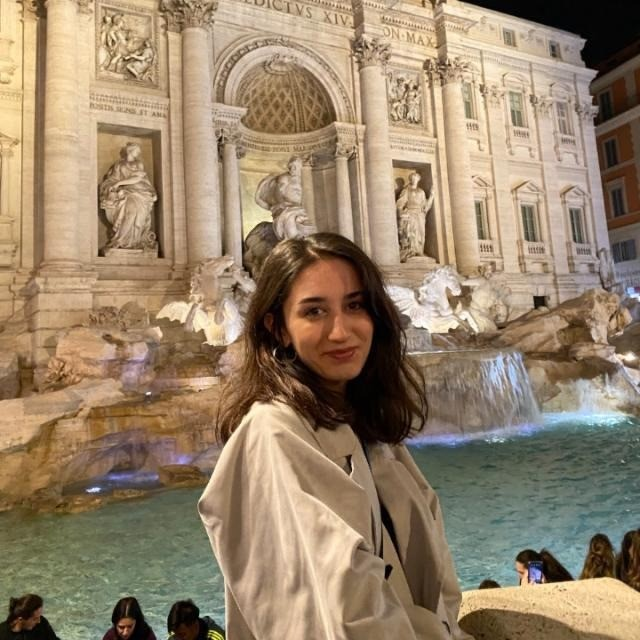

Merhaba! Ben Ahsen Arslantepe.
 Telefon
Telefon
E-mail

Hakkımda
Merhaba ben Ahsen Arslantepe! 24 Ağustos 2000 tarihinde Aksaray'da doğdum.Türkiye'nin pek çok şehrinde yaşadım.
Sırasaıyla yaşadığım şehirler şu şekilde:
- Aksaray
- Van
- Konya
- İstanbul
- Ankara
Burak Bora Anadolu Lisesinden mezun oldum.Yıldız Teknik Üniversitesi Matematik Mühendisliği son sınıf öğrencisiyim.
Erasmus+ değişim programıyla 2022-2023 eğitim yılı bahar dönemini Polonya'da bulunan Lodz Üniversitesi'nde okudum.Bu
program sayesinde pek çok ülkeyi gezme fırsatı yakaladım.Blog sayfama yönlendirilmek için tıklayınız.
Bu sene Yıldız Teknik Üniversitesi bünyesinde bulunan sürekli eğitim merkezinde front-end eğitimine katıldım.
Okuduğum Okulların Web Sayfaları
Hobilerim
Voleybolla 2012 Londra Olimpiyatlarını seyrederken tanıştım.Hala en sevdiğim oyuncu olan Neslihan Demir'e olan hayranlığım
beni voleybol oynamaya itti.2013-2017 yılları arasında lisanslı voleybol oynadım. Üniversite hazırlık döneminde
YTÜ Tiyotro Kulübü'ne katıldım. Son iki senedir buz pateni yapıyorum.
Diğer hobilerim;
Gezmek
Yemek Yapmak
Şarkı Söylemek
Ebru
Sayfa başına dönmek için tıklayınız.